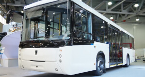

15.04.2019
КамАЗ поставил в Новосибирск партию газовых автобусов «Нефаз»
КамАЗ поставил в Новосибирск вторую партию автобусов «Нефаз»
большого класса. Все машины для работы на регулярных маршрутах снабжены моторами,
работающими на компримированном природном газе, сообщила 27 июля пресс-служба компании.